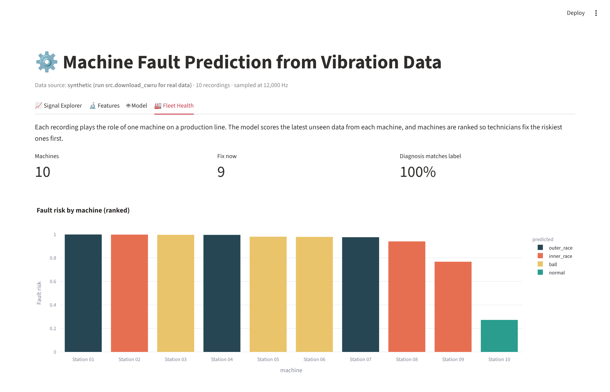

● Live
Machine Fault Prediction from Vibration Data
Envelope analysis and feature engineering on bearing vibration data. A random forest finds which part is failing and ranks machines for maintenance. A public recreation of my Tesla downtime project.